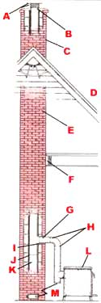

Your best prevention is regular care by a chimney sweep. Here's what to do when that precaution isn't enough.
One of the true challenges of parenthood is facing questions like, "Mommy, where do the pieces of tree you put in the woodstove go?" What do you say? Do you launch into a speech on oxidation of carbon, vaporization of water, temperature-induced draft and flue gas velocity? Might as well invoke gremlins. A more honest and effective answer would be to explain that much of the wood turns into goo - a substance resembling day-old oatmeal, except it's black - that sticks to the inside of the chimney.
That glop is, of course, creosote, the wood burner's bane. It's a nuisance to clean out and a hazard to leave alone. Touched off by the right combination of heat and oxygen, creosote can show a demonic mind of its own, turning a normally smoky chamber into an inferno. Flame temperatures in a chimney fire can exceed 2,000°F, sufficient to crack a flue liner or send showers of sparks onto the roof. More than 20% of all house fires are caused by woodburning appliances, and around half of those are related to chimney problems.
What Is It?
Creosote consists of particles and condensed vapors left over from the incomplete combustion of wood. It comes in many different forms - chimney sweeps identify types such as tar glaze, slag, flakes and soot - but all are combustible. Besides posing the threat of chimney fires, creosote is messy; it stains pipes, connectors, chimneys and roofs and corrodes metal parts of the chimney system. Some of its constituents may be highly carcinogenic.
The best way to combat creosote is to bum wood as completely as possible in one of the new clean-burning woodstoves. Look for a heater that has been certified by the state of Oregon's Department of Environmental Quality or the U.S. Environmental Protection Agency. However, an efficient stove is still no substitute for a good chimney system. The following suggestions will help any wood burner work more efficiently and safely.
Good Design
A properly designed and installed chimney will accumulate creosote more slowly than will an inadequate one, and it will be better able to withstand the ravages of a chimney fire, should one occur. If you're considering installing a chimney, take comfort in the fact that it doesn't cost a lot more to do it right; and if your present chimney doesn't measure up, consider the potential costs of neglect.
The basics. Safety dictates that a chimney used to vent a woodstove should be made of either tile-lined masonry with an air gap between tile and brick or insulated stainless steel, and it should serve only the stove. All openings other than the stove's connector and the cleanout (which should have a tightfitting cover) should be sealed. Air leaks make it impossible to control a chimney fire if one gets started.
Safe clearances. Even the most effective chimney requires a clear air space (without insulation) of at least 2" to the nearest combustible material. All wooden framing members and sheathing should be held back from the outer surface of the chimney. This may seem unnecessary when you lay a hand on a brick chimney and realize that it's little more than warm to the touch, but the provision is meant to deal with the sorts of extremes that occur during a chimney fire.
Likewise, you should observe safe clearances for the stove and its connector. If these aren't listed on the appliance, consult a book on wood heating.
Creosote accumulation. The creosote accumulation rate in a chimney is affected by five factors: the density of the smoke, the temperature of the smoke, the amount of time the smoke spends in the chimney, the turbulence (swirling) of the flow and the temperature of the chimney walls. The first two are mainly matters of operating technique, which we won't discuss here, but the last three are directly affected by chimney design.
Chimneys should have about the same cross-sectional area as the stove's outlet, a size which offers a good compromise between smoke residence time and turbulence. Creosote problems often occur when a woodstove is connected to a fireplace chimney, which may be three or four times too large. Such chimneys should be relined to reduce their size.
Of the three chimney design factors, wall temperature may have the largest influence on creosote deposition. What's more, a warm chimney is a win-win situation. You'll get less creosote and more draft. The temperature of the chimney's inner wall is determined by the temperatures of the flue gases inside and the air outside and by the insulation value of the material between. Most important, an interior chimney - one that is wrapped in warm house air - stays clean much longer than one that runs up the side of the house.
Of the various types of chimney materials, insulated metal is most effective at retaining heat. The insulation may be either a special fiberglass and ceramic material or a sealed air space. (Avoid chimneys cooled by circulating air.) Masonry is less effective, though some reliners use an insulating refractory that has a considerably higher R-value than either brick or block.
An indoor connector between a woodstove and chimney isn't usually made with insulated pipe. This short section of single- wall material is a compromise between efficiency (since the pipe radiates heat that would otherwise go up the chimney) and creosote. As a general rule of thumb, keep uninsulated connectors to less than 6' in length. Use the minimum number of elbows with the most-gradual turns possible to allow smoke to flow smoothly up the chimney. And secure all joints with sheet metal screws.
Creosote-reducing devices. In MOTHER Nos. 73 and 74, Jay Shelton and Claudia Lewis reported on their tests of several stove attachments that were designed to reduce the rate of creosote accumulation in chimneys. The most effective of these were catalytic converters and barometric draft controls. A properly designed and operated catalyst can cut creosote deposits by more than 90%. A catalyst is most effective when integrated with the stove's design. A barometric draft control dilutes the smoke, allowing it to pass out of the chimney without leaving creosote behind. Shelton and Lewis found that the device can reduce creosote accumulation by up to 75% but noted two liabilities: It allows warm house air to escape up the chimney and will provide a chimney fire with air.
Chimney Cleaning
How often should you clean your chimney? About the most advice anyone can offer is to do so whenever deposits reach 1/4" in thickness. This may happen in a matter of days in a poorly designed chimney connected to a woodstove operated at very low output. Or it may take years in a well-designed system attached to a good catalytic stove. Check your chimney weekly until you learn how its installation and your operating techniques affect creosote.
SAFE STOVE INSTALLATION
A>CAP AND SPARK SCREEN
B>>FLEXIBLE ATTACHMENT TO PREVENT STRESS-CRACKING.
C>CHIMNEY TOP AT LEAST 3' ABOVE ROOF PEAK
D>ROOFING AND RAFTERS HELD BACK AT LEAST 2" FROM THE CHIMNEY
E> AS MUCH OF CHIMNEY AS POSSIBLE INSIDE THE HOUSE
F>JOISTS HELD BACK 2" FROM CHIMNEY
G> CONNECTOR PENETRATES THIMBLE AT LEAST 3"
H>ALL JOINTS FIXED WITH SCREWS
I> TILE THIMBLE
J> AIR SPACE
K> TILE LINERAPPROVED CATALYTIC WOODSTOVE IS PREFERABLE
L> CLEAN OUT
What to Do When It Happens
When a chimney fire finally does get started - and for most wood burners, it's a matter of when, not if - it will announce itself dramatically. The normal crackle will be overwhelmed by a roar often likened to a 747 taking off up your chimney. You'll hear air being sucked through the draft control, and stovepipe sections may even shake. The connector may begin to glow cherry red.
Chimney fires most often occur when starting a fire, when refueling, or during an unusually hot blaze. Flames, allowed to burn intensely to ignite new fuel, lick into the chimney and, if there's enough oxygen, ignite the creosote. Heat in the chimney drastically increases draft, inducing the flames to rise through the entire system. One thing leads to another, and in short order you've got a raging inferno that can destroy the chimney and even burn down your house.
As soon as you suspect you've got a chimney fire, close the stove door and draft control; if the heater is reasonably airtight, suffocation will subdue a chimney fire in its early stages. Next, alert everyone in the house so they'll be prepared to leave if necessary. Then step outside and determine if any sparks are coming out the top of the chimney. These may ignite roofing materials or other nearby combustibles. A shower of sparks should send you straight for the telephone to call the fire department. In fact, the best course of action is to call firefighters as soon as you've closed the stove door and dampers and alerted your family. By the time you decide that you really need the pros, it may be too late.
Closing the damper may only reduce the intensity of a chimney fire. A blaze in a heavy creosote deposit can smolder for hours, despite having its oxygen supply cut off. Open the draft control to resume normal heating, and your jetport will be open again for takeoff.
EARLY WARNING
Chimney fire alarms incorporate a flue-temperature sensor that activates a visible or audible alarm at a certain set point. Units with internal sensors can warn of the start of a chimney fire long before it reaches the stage where it gives other outward signs, and even external sensors may give several minutes of warning. Potentially, then, a chimney fire alarm can be a very important saftey accessory for wood burners.
If you'd like to experiment with a do-it-yourself alarm, see "MOTHER's Flue Alarm" in issue 73. This inexpensive project uses an external sensor that, while less sensitive to the onset of a chimney fire, is also less prone to sound a false alarm.
To put a chimney fire out for good, you may need a fire extinguisher. There are two effective types: dry-chemical pressurized canisters and chimney fire extinguishers, which resemble highway flares. The standard household dry-chemical canister requires that you hold the stove door open while applying the chemical above the fire - a possible disadvantage. The flares simply require you to light one, toss it in and close the door. Other remedies, such as salt and baking soda, may be effective but are unproven. In any event, never try to put out a chimney fire by dousing the fire in the stove with water. You'll be likely to crack the castings or pop a weld, which could be disastrous.
Dry-chemical extinguishers are available at just about any hardware store, but you might have to visit a woodstove dealer to find the specialized chimney extinguisher. It's a good idea to have both, keep them where they're readily accessible, and make sure that all the adults in the household know how to use them.
There are three main hazards during a chimney fire. First, combustible materials near the chimney could catch fire from the radiant heat of the chimney. If the system has proper clearances, this is unlikely. Second, pressure may build in the chimney to the point where fire is forced out through cracks. This shouldn't be a problem in a chimney that's in good condition. Third, sparks from the top of the chimney may ignite roofing materials or nearby vegetation. A spark arrester screen will stop larger solids from coming out the top of the chimney, but the screen will have to be cleaned frequently during the burning season.
The Aftermath
Once the chimney fire is dead and the chimney has cooled, the system should be thoroughly inspected for damage. The firefighters you called to put out the fire will probably be glad to do this post mortem for you and make recommendations.
At the least, replace any black-metal or galvanized connectors that became so hot they glowed. High temperatures initiate rapid deterioration in these non-stainless steel parts. Stainless steel insulated chimney comes in two grades, UL103 and UL103HT. The latter is rated to 2,100°F and is better able to withstand the stress of a chimney fire. Either type should be inspected after any flare-up. Look for wrinkling of the inner jacket and looseness in the joints.
In masonry chimneys, search for exterior cracks, leaks in joints, chipping or cracks in tile liners and deterioration at the thimble (where the stove connector enters the chimney).
For most wood burners, chimney fires aren't just possible; they're inevitable. Neophytes are often caught quite by surprise the first time, and few shrug off the experience lightly. A full-scale chimney fire makes an unforgettable impression. Here's hoping you'll have the opportunity to avoid the second one.
|
 |
|
|